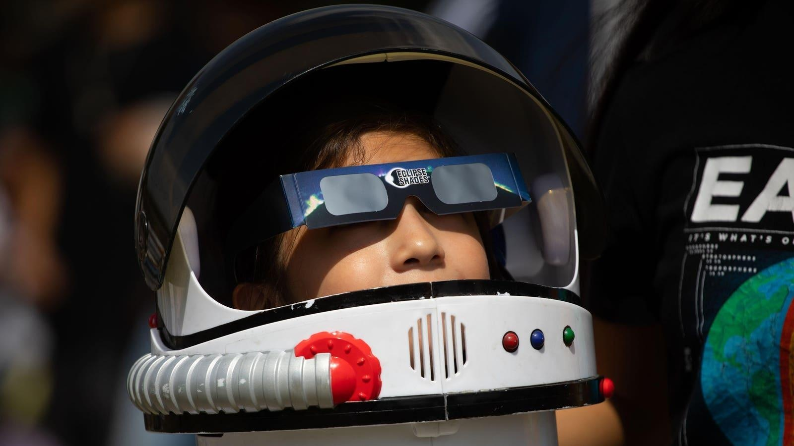

Why To Buy Your Eclipse Glasses Now As New Data Reveals 27% Price HikeAs April 8’s solar eclipse across North America approaches, the demand for viewing glasses is rising—and so are prices. According to the e-commerce accelerator Pattern, the prices of solar eclipse glasses have increased by 27% online since the last solar eclipse in North America on October 16. It also predicts that the cost of solar eclipse glasses may surge by another 4% the week before the event, now just over a month away. However, it may still be possible for some to find free solar eclipse glasses. ‘NASA-Approved Eclipse Glasses’ The company also revealed that the most popular search term for buyers online is “NASA-approved eclipse glasses,” which is an entirely mythical belief—NASA does not endorse any products. The space agency—and all stakeholders in the eclipse community in North America—recommend that consumers cross-reference any company or brand of eclipse glasses with those on the American Astronomical Society (AAS) Suppliers of Safe Solar Filters & Viewers. This lists companies that have submitted test reports that confirm they are either manufacturing or selling safe eclipse glasses and handheld viewers that comply with the ISO 12312-2 international standard. Demand Up 22% In normal times, eclipse glasses cost a couple of dollars. However, particularly in the lead-up to a solar eclipse, they’re sold in packs of five or 10. According to Pattern, this is the most commonly searched-for version of eclipse glasses products online, whose data science team analyzed thousands of product pricing and consumer demand data points on Amazon over the past six months to determine the impact the upcoming eclipse might have on demand and pricing. It found that the demand for eclipse glasses is already up 22% this month compared to the lead-up to October’s eclipse. “Orders have been steadily increasing since January and we are close to selling out of two of our five designs,” said Polly White at GreatAmericanEclipse.com, one of the companies on the AAS list of suppliers. The company has been selling eclipse glasses for over a decade. Prices Are Rising The average price closely mirrors that rise in demand, with the data indicating a rise of $4 per pack of eclipse glasses. During eclipse week in October, the average cost was $16. Right now, it’s already $20. Further price rises seem almost inevitable. “Prices of our eclipse glasses—and other viewers— have gone up since October,” said White, adding that they may rise as supply dwindles. It currently sells packs of five for $17. The spike in demand is in part a response to significant issues just before the last total solar eclipse in the U.S. on August 21, 2017. In advance of that event, Amazon the U.S. on August 21, 2017, when Amazon issued refunds to customers who purchased solar eclipse glasses that may not have met the ISO standard. Consumer Savvy “Based on the data, American consumers seem to have learned lessons the hard way from the last total solar eclipse to pass over the U.S.,” said Hamilton Noel, Pattern’s data scientist. “Our analysis of millions of searches on Amazon over the last six months indicate increased consumer savvy when it comes to eye protection and solar eclipse viewing, with more consumers than ever shopping for eclipse viewing glasses that meet higher, recommended standards for quality and safety.” With the current surge in demand and prices, it’s wise to buy eclipse glasses now to avoid paying higher prices—just don’t expect to ever find “NASA-approved eclipse glasses!” For the latest on all aspects of April 8’s total solar eclipse in North America, check my main feed for new articles each day. Wishing you clear skies and wide eyes. |
 |